Code
remotes::install_github("lter/lterdatasampler")Introduction to Statistics in R
This lab will walk us through some basic statistical tests in R, including chi-square, t-tests, and correlation tests. We will use data from the Long-Term Ecological Research (LTER) Network, which is a collaborative effort involving more than 2000 scientists and students investigating ecological processes over long temporal and broad spatial scales. The basics of this lab were adopted from a previous version of this course. This qmd for this lab can be downloaded here. Please download it into the repo of your choice and open it in RStudio to work through this lab:
In this portion of the lab you will be introduced to the process of conducting statistical tests in R, specifically chi-square, t-tests, and correlation tests. These are commonly used for univariate and bivariate data.
Univariate data consists of observations on a single variable. It describes one characteristic of a dataset without considering relationships between variables. Examples include:
- The heights of students in a class
- The daily temperature of a city
- The number of books read by individuals in a year
Bivariate data involves observations on two variables and explores the relationship between them. It is used to analyze correlations or dependencies. Examples include:
- The relationship between students’ study time and their exam scores
- The correlation between temperature and ice cream sales
- The effect of age on income level
To learn about this statistical tests, we will use data for cutthroat trout and salamander length and weights collected in Mack Creek, which is in the Andrews Forest Long-Term Ecological Research (LTER) facility in Oregon in the Cascade Mountains. Specifically, these data were collected in different forest treatments: clear cut or old growth.
First, to access the dataset(s) you will be using today install the lterdatasampler package (remotes is needed because lterdatasampler has to be installed from GitHub)
remotes::install_github("lter/lterdatasampler")Now load in the libraries needed for this lab:
library(tidyverse)
library(ggpubr)
library(lterdatasampler)
library(car)
library(visdat)Then run the following line of code to retrieve the and_vertebrates data set and bring it into your R session:
?and_vertebrates
data <- and_vertebratesTo start, we’ll begin looking at the and_vertebrates dataset. Start this section with some EDA to understand its structure, variables and data types:
# Viewing the data structure:
glimpse(data)Rows: 32,209
Columns: 16
$ year <dbl> 1987, 1987, 1987, 1987, 1987, 1987, 1987, 1987, 1987, 1987…
$ sitecode <chr> "MACKCC-L", "MACKCC-L", "MACKCC-L", "MACKCC-L", "MACKCC-L"…
$ section <chr> "CC", "CC", "CC", "CC", "CC", "CC", "CC", "CC", "CC", "CC"…
$ reach <chr> "L", "L", "L", "L", "L", "L", "L", "L", "L", "L", "L", "L"…
$ pass <dbl> 1, 1, 1, 1, 1, 1, 1, 1, 1, 1, 1, 1, 1, 1, 1, 1, 1, 1, 1, 1…
$ unitnum <dbl> 1, 1, 1, 1, 1, 1, 1, 1, 1, 1, 1, 1, 1, 1, 1, 1, 2, 2, 2, 2…
$ unittype <chr> "R", "R", "R", "R", "R", "R", "R", "R", "R", "R", "R", "R"…
$ vert_index <dbl> 1, 2, 3, 4, 5, 6, 7, 8, 9, 10, 11, 12, 13, 14, 15, 16, 1, …
$ pitnumber <dbl> NA, NA, NA, NA, NA, NA, NA, NA, NA, NA, NA, NA, NA, NA, NA…
$ species <chr> "Cutthroat trout", "Cutthroat trout", "Cutthroat trout", "…
$ length_1_mm <dbl> 58, 61, 89, 58, 93, 86, 107, 131, 103, 117, 100, 127, 99, …
$ length_2_mm <dbl> NA, NA, NA, NA, NA, NA, NA, NA, NA, NA, NA, NA, NA, NA, NA…
$ weight_g <dbl> 1.75, 1.95, 5.60, 2.15, 6.90, 5.90, 10.50, 20.60, 9.55, 13…
$ clip <chr> "NONE", "NONE", "NONE", "NONE", "NONE", "NONE", "NONE", "N…
$ sampledate <date> 1987-10-07, 1987-10-07, 1987-10-07, 1987-10-07, 1987-10-0…
$ notes <chr> NA, NA, NA, NA, NA, NA, NA, NA, NA, NA, NA, NA, NA, NA, NA…vis_dat(data)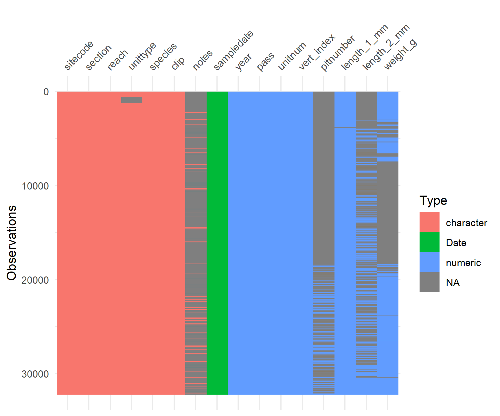
# Exploring the metadata with the Help tab:
?and_vertebratesThe data presented in this study shows an aquatic vertebrate population study of Cutthroat trout and the Cascade Torrent salamander and Coastal Giant salamanders within the clear cut or old growth coniferous forests of the Mack Creek. This was presented in Andrew’s Experimental Forest located in Oregon, measuring the lengths and weights of each observed from 1987 to 2019.
The data also contains 32,209 observations that were measured with 16 variables: year (of observation), sitecode (sample area), section (CC = clear cut forest; OG = upstream old growth), reach (L = lower reach [0-50 meters]; M = middle reach [50-100 meters]; U = upper reach [100-150 meters]), pass (binary [1/2], electroshocking pass number), unitnum (channel unit number), unitype (C = cascade; I = riffle; IP = isolated pool; P = pool; R = rapid; S = small fall/step; SC = side channel; NA = not sampled by unit), vert_index (unique code for each vertebrate), pitnumber (tag number for each vertebrate), species (name of species), length_1_mm (vertebrate length in millimeters [otal or snout-fork length for trout, and snout-vent length for salamanders]), length_2_mm (snout-tail length in millimeters [for Coastal giant salamander only]), weight_g (mass in grams), clip (LV = left ventral fin; LVRV = left and right ventral fins; RV = right ventral fin; NONE = no ventral fin clip), sampledata (date of observation), notes (any additional comments).
When you are working with two categorical variables, the statistical test you use is a Chi-square test. This test helps identify a relationship between your two categorical variables.
For example, we have two categorical variables in the and_vertebrates data set:
section = two forest sections, clear cut (CC) and old growth (OG)
unittype = stream channel unit classification type (C = cascade, I = riffle, IP = isolated pool (not connected to channel), P = pool, R = rapid, S = step (small falls), SC = side channel, NA = not sampled by unit)
Lets focus this question on Cutthroat trout. First explore the abundance of cutthroat trout in different channel types, using the count() function to return the total count/number of observations in each group - making sure to limit your analysis to “Cutthroat trout”.
data |>
filter(species == "Cutthroat trout") |>
count(unittype)# A tibble: 8 × 2
unittype n
<chr> <int>
1 C 11419
2 I 23
3 IP 105
4 P 5470
5 R 420
6 S 9
7 SC 2377
8 <NA> 610This output tells us that there are quite a few observations with the NA category, meaning channel type was unknown or not recorded. Let’s edit the workflow above slightly, using drop_na() to remove any rows within a specified column (or columns) that have NA values:
data |>
filter(species == "Cutthroat trout") |>
drop_na(unittype) |>
count(unittype)# A tibble: 7 × 2
unittype n
<chr> <int>
1 C 11419
2 I 23
3 IP 105
4 P 5470
5 R 420
6 S 9
7 SC 2377This returns just about the same data frame as the first method, but now with the NA category removed because it dropped any observations that were NA for unittype.
From this we also observe that the highest Cutthroat trout abundances are found in cascade (C), pool (P), and side channel (SC) habitats.
Now, our question expands beyond this one categorical variable (channel type) and we want to know if abundance is affected by both channel and and forest type (section). Here, our null hypothesis is that forest and channel type are independent. To test this, we use the chisq.test() to carry out a chi-square test, but first we have to reformat our data into a contingency table.
A contingency table is in matrix format, where each cell is the frequency (in this case seen as abundance) of Cutthroat trout in each combination of categorical variables (forest type and channel unit). We can create a contingency table with the table() function. For this analysis, lets also keep just the 3 most abundant unit types for Cutthroat trout (C, P and SC).
# First clean the dataset to create the contingency table from
trout_clean <- data |>
filter(species == "Cutthroat trout") |>
filter(unittype %in% c("C", "P", "SC")) |>
drop_na(unittype, section)
cont_table <- table(trout_clean$section, trout_clean$unittype)To execute the Chi-square test does not take that much code, but it is important to note that by default, chisq.test() assumes the null hypothesis is that all frequencies have equal probability. If you have different pre-conceived frequency probabilities for your data you have to define those within the chisq.test() function.
chisq.test(cont_table)
Pearson's Chi-squared test
data: cont_table
X-squared = 188.68, df = 2, p-value < 2.2e-16Looking at these results, we see an extremely small p-valuetelling us there is a significant relationship between forest type and channel unit (i.e., we rejected our null hypothesis).
Lets look at the abundance distribution visually:
trout_clean |>
count(unittype, section) |>
ggpubr::ggbarplot(x = 'unittype', y = 'n',
fill = 'section',
palette = c("#00AFBB", "#E7B800"),
add = "mean_se") 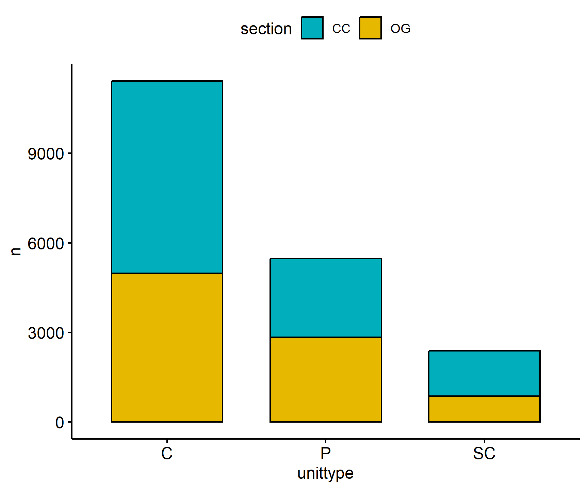
Previous work has shown that forest harvesting practics can impact aquatic vertebrate biomass (Kaylor & Warren 2017). Using the and_vertebrates data set we can investigate this by comparing weight to forest type (clear cut or old growth). This involves a test to compare the means (average weight) among two groups (clear cut and old growth forests) using a t-test.
Let’s focus on conducting this test for Cutthroat trout. We can use the same trout_clean data set we made earlier so long as we drop all NAs in weight_g. Once this is done, we can visualize the differences in weight among forest type with a boxplot:
trout_clean |>
drop_na(weight_g) |>
ggpubr::ggviolin(x = "section",
y = "weight_g",
add = "boxplot",
color = "section",
palette = c("#00AFBB", "#E7B800")) 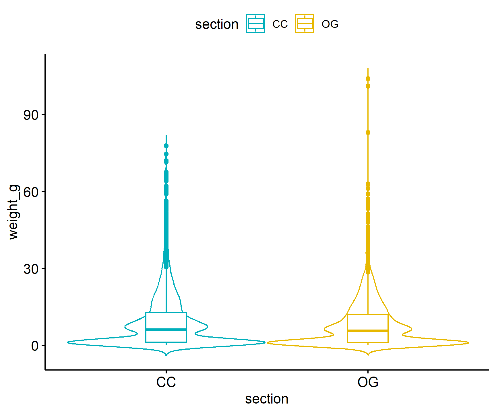
We don’t see too much of a difference based on this visual, but we need to conduct the statistical test to verify. Before we dive into the statistical t-test, we must check our assumptions!
Test Assumptions: A t-test assumes the variance of each group is equal and the data are normally distributed.
Equal Variance We can test for equal variances with the function var.test(), where the null hypothesis is that the variances are equal. In this step, we need two vectors of the weights in each separate forest section. You can use pull() to convert a single column of a data frame/tibble to a vector, and we want to do this for clear cut and old growth forests.
cc_weight <- trout_clean |>
filter(section == "CC") |>
pull(weight_g)
og_weight <- trout_clean |>
filter(section == "OG") |>
pull(weight_g)
var.test(cc_weight, og_weight)
F test to compare two variances
data: cc_weight and og_weight
F = 1.2889, num df = 6310, denom df = 5225, p-value < 2.2e-16
alternative hypothesis: true ratio of variances is not equal to 1
95 percent confidence interval:
1.223686 1.357398
sample estimates:
ratio of variances
1.288892 The results of this test suggests the variances are not equal. How do we know this? If you can’t remember, please refresh your memory of the null hypothesis for the variance test and how to interpret the p-value. - We know this because
One option for data with unequal variances is to use the non parametric Welch t-test, which does not assume equal variances. We will explore this test later.
Normal Distribution A t-test mandates data with a normal distribtution. Here we can use a visual method to access the normality of the data:
ggpubr::ggarrange(ggpubr::gghistogram(cc_weight, main = "Clear Cut"),
ggpubr::gghistogram(og_weight, main = "Old Growth"))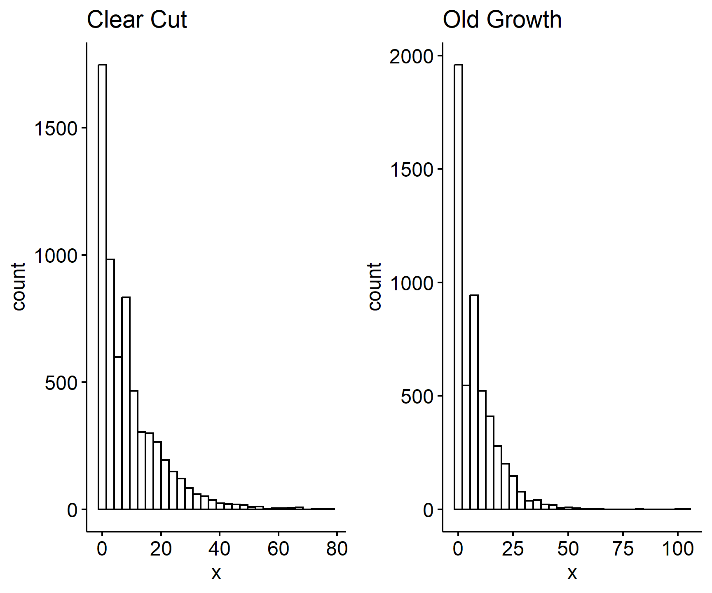
We can see from the histograms that the data are very right skewed. When we see a heavy right skew, we know a log transform can help normalize the data. Let’s check the variances like we did before using the log transformed values:
var.test(log(cc_weight), log(og_weight))
F test to compare two variances
data: log(cc_weight) and log(og_weight)
F = 1.0208, num df = 6310, denom df = 5225, p-value = 0.4374
alternative hypothesis: true ratio of variances is not equal to 1
95 percent confidence interval:
0.9691443 1.0750427
sample estimates:
ratio of variances
1.020787 Now we have a much higher p-value, indicating support for the null that the variances of log-transformed data are equal. So we can use the default t.test() test which assumes equal variances, but only on a log transformed weight variable.
The t.test() function takes in your dependent (in our case trout weight) and independent (forest type) variables as vectors. The order of the variables in the t.test() function is {dependent variable} ~ {independent variable}. We use the ~ to specify a model, telling the test we want to know if weight varies by forest section.
Remember we also want to log transform the weight values and then specify that our variances are equal since we confirmed that with var.test() above, so the final t.test() call would be this:
t.test(log(trout_clean$weight_g) ~ trout_clean$section, var.equal = TRUE)
Two Sample t-test
data: log(trout_clean$weight_g) by trout_clean$section
t = 2.854, df = 11535, p-value = 0.004324
alternative hypothesis: true difference in means between group CC and group OG is not equal to 0
95 percent confidence interval:
0.02222425 0.11969560
sample estimates:
mean in group CC mean in group OG
1.457042 1.386082 The output of this test gives us the test statistics, p-value, and the means for each of our forest groups. Given the p-value of 0.0043, we reject the null hypothesis (mean Cutthroat weight is the same in clear cut and old growth forest sections), and looking at our results - specifically the means - we can conclude that Cutthroat trout weight was observed to be significantly higher in clear cut forests compared to old growth forests. Remember that the mean weight values are log transformed and not the raw weight in grams. The relationship can still be interpreted the same, but you will want to report the means from the raw weight data.
How does this relate to the original hypothesis based on the graph we made at the beginning of this section?
Welch Two Sample t-test
Alternatively, instead of transforming our variable we can change the default t.test() argument by specifying var.equal = FALSE, which will then conduct a Welch t-test, which does not assume equal variances among groups.
t.test(trout_clean$weight_g ~ trout_clean$section, var.equal = FALSE)
Welch Two Sample t-test
data: trout_clean$weight_g by trout_clean$section
t = 4.5265, df = 11491, p-value = 6.056e-06
alternative hypothesis: true difference in means between group CC and group OG is not equal to 0
95 percent confidence interval:
0.4642016 1.1733126
sample estimates:
mean in group CC mean in group OG
8.988807 8.170050 While using a slightly different method, our conclusions are the same, finding that Cutthroat trout had significantly higher weights in clear cut forests than old growth.
Note: In the t.test() function you can add paired = TRUE to conduct a paired t-test. These are for cases when the groups are ‘paired’ for each observation, meaning each group/treatment was applied to the same individual, such as experiments that test the impact of a treatment, with measurements before and after the experiment.
To assess the relationship between two continuous variables, you use a correlation test, which is the cor.test() function. Correlation tests assess the presence of a significant relationship and the strength of each relationship (i.e., the correlation coefficient). There are multiple correlation methods you can use with this function but by default, it uses the Pearson correlation method which assumes your data are normally distributed and there is a linear relationship. If these assumptions are not met, you can use a Spearman Rank correlation test, a non-parametric test that is not sensitive to the variable distribution. To use this method, specify spearman for method.
For our and_vertebrates data set, we can test the relationship of length and weight. Let’s test the hypothesis that body length is positively correlated with weight, such that longer individuals will also weigh more, specifically looking at the Coastal Giant salamander.
First let’s clean our data set to just include the Coastal giant salamander and remove missing values for length and weight.
sally_clean <- and_vertebrates |>
filter(species == "Coastal giant salamander") |>
drop_na(length_2_mm, weight_g)Testing Assumptions
Let’s look at the distribution of these variables first:
ggarrange(gghistogram(sally_clean$length_2_mm, title = "Length"),
gghistogram(sally_clean$weight_g, title = "Weight"))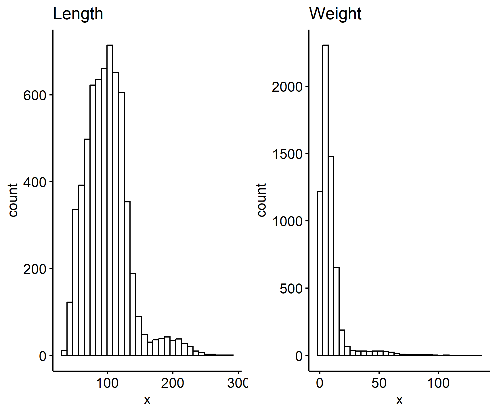
They both look pretty skewed, therefore likely not normally distributed. We can statistically test if a variable fits a normal distribution with the shapiro.test() function, which is the Shapiro-Wilk normality text. However note that this function only runs for 5,000 observations or less, so we will test for normality for a sample of our sally_clean data set:
s <- sally_clean |>
slice_sample(n = 5000)
shapiro.test(s$length_2_mm)
Shapiro-Wilk normality test
data: s$length_2_mm
W = 0.93085, p-value < 2.2e-16shapiro.test(s$weight_g)
Shapiro-Wilk normality test
data: s$weight_g
W = 0.5542, p-value < 2.2e-16The null hypothesis of the Shapiro-Wilk normality test is that the variable is normally distributed, so a significant p-value less than 0.05 (as we see for both of our variables here) tells use that our data does not fit a normal distribution.
Therefore we have two options as we did with our earlier t-test example: transform the variables or use the non-parametric test.
Variable transformation
Lets try the first option by log transforming our variables, first viewing the log-transformed distribution for each variable.
ggarrange(
gghistogram(log(sally_clean$length_2_mm), title = "Length"),
gghistogram(log(sally_clean$weight_g), title = "Weight")
)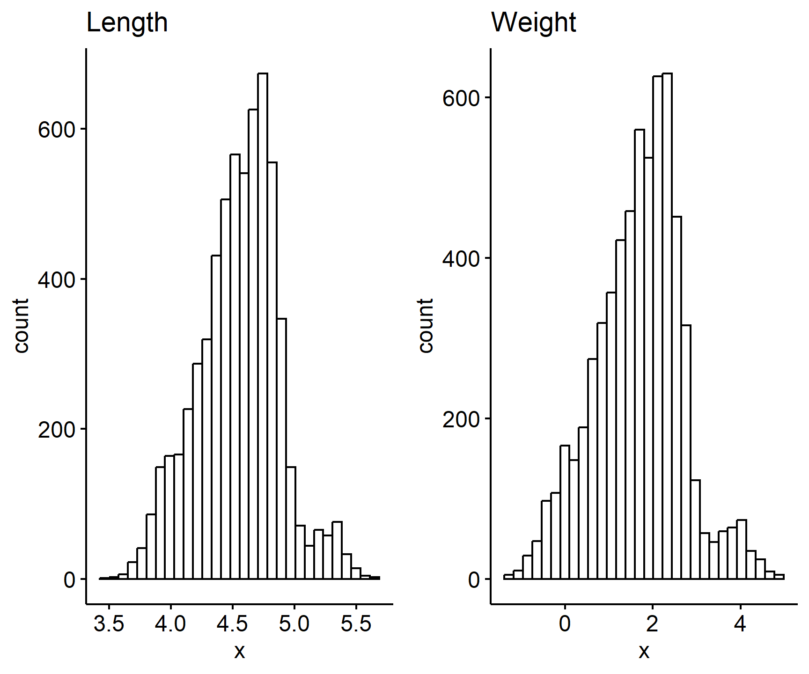
Since the log-transformed data look normally distributed (note that we can test using the Shapiro-Wilk normality test on the log-transformed data), we can use the Pearson’s correlation test (the default for cor.test()). All we need to add to the cor.test() argument is the two variables of our sally_clean data set we want to test a relationship for, and keep them log-transformed since those distributions looked closer to a normal distribution (visually at least).
cor.test(log(sally_clean$length_2_mm), log(sally_clean$weight_g))
Pearson's product-moment correlation
data: log(sally_clean$length_2_mm) and log(sally_clean$weight_g)
t = 402.85, df = 6229, p-value < 2.2e-16
alternative hypothesis: true correlation is not equal to 0
95 percent confidence interval:
0.9804036 0.9822403
sample estimates:
cor
0.9813443 From these results we see a very small p-value, meaning there is a significant association between the two, and a correlation coefficient of 0.98, representing a strong, positive correlation.
Let’s look at this correlation visually:
sally_clean |>
mutate(log_length = log(length_2_mm), log_weight = log(weight_g)) |>
ggscatter(x = 'log_length',
y = 'log_weight',
alpha = .35,
add = "loess")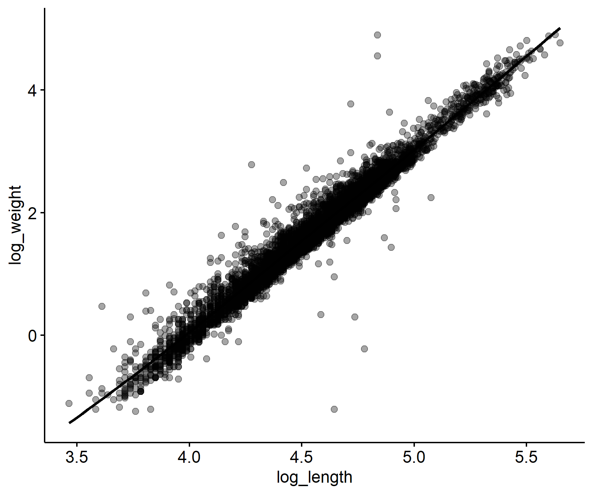
Spearman Correlation Test
Let’s now perform the correlation test again but keeping our raw data and instead specifying method = 'spearman', as the Spearman test is better for non-parametric and non-linear data sets.
cor.test(sally_clean$length_2_mm, sally_clean$weight_g, method = "spearman")
Spearman's rank correlation rho
data: sally_clean$length_2_mm and sally_clean$weight_g
S = 819296957, p-value < 2.2e-16
alternative hypothesis: true rho is not equal to 0
sample estimates:
rho
0.9796802 These results also represent a significant, positive relationship between length and weight for the Coastal Giant salamander, with a very high correlation coefficient.
Each question requires you to carry out a statistical analysis to test some hypothesis related to the and_vertebrates data set. To answer each question fully:
Include the code you used to clean the data and conduct the appropriate statistical test. (Including the steps to assess and address your statistical test assumptions).
Report the findings of your test in proper scientific format (with the p-value in parentheses).
1. Conduct a chi-square test similar to the one carried out above, but test for a relationship between forest type (section) and channel unit (unittype) for Coastal giant salamander abundance. Keep all unittypes instead of filtering any like we did for the Cutthroat trout (10 pts.)
data |>
filter(species == "Coastal giant salamander") |>
drop_na(unittype) |>
count(unittype)# A tibble: 6 × 2
unittype n
<chr> <int>
1 C 7697
2 IP 50
3 P 1943
4 R 72
5 S 2
6 SC 1994This tibble can show us the distribution of obsercations based on the 6 locations taken for the data set, exemping any that were observed as NA to clean the data we are investigating for Coastal giant salamander abundance.
GS_clean <- data |>
filter(species == "Coastal giant salamander") |>
drop_na(unittype, section)
GS_table <- table(GS_clean$section, GS_clean$unittype)This is the cleaned data code for reducing the amount of those found with N/A.
chisq.test(cont_table)
Pearson's Chi-squared test
data: cont_table
X-squared = 188.68, df = 2, p-value < 2.2e-16We can understand that the inital Chi-sqaured test indicated that there is a statistically significant relationship between location of the site and abundacne of Coastal giant salmanders.
GS_clean |>
count(unittype, section) |>
ggpubr::ggbarplot(x = 'unittype', y = 'n',
fill = 'section',
palette = c("#00AFBB", "#E7B800"),
add = "mean_se") 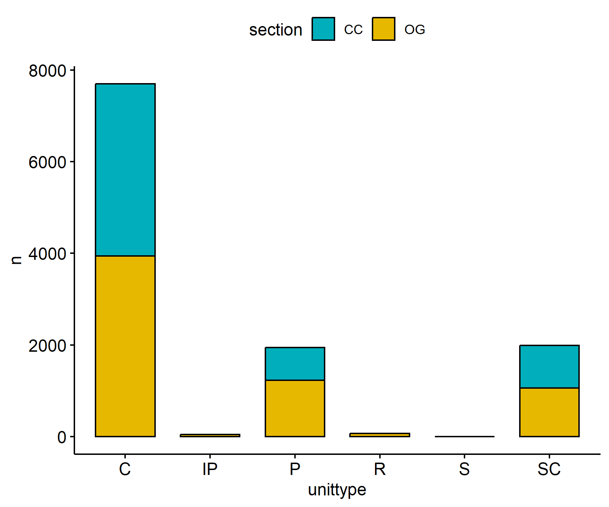
The Chi-Sqaure Test shows that there is a significant difference between the forest type (section) and channel unit (unittype) for Coastal giant salamander abundance. As shown above in the table, there is a larger abundance of Coastal giant salamanders in cascades, pools, and side channel water bodies than the other three tested for (the most abudant in cascades) and an even split between clear cut growth and older growth confierious forests.
2. Test the hypothesis that there is a significant difference in species biomass between clear cut and old growth forest types for the Coastal Giant salamander. (10 pts.)
GS_clean |>
drop_na(weight_g) |>
ggpubr::ggviolin(x = "section",
y = "weight_g",
add = "boxplot",
color = "section",
palette = c("#00AFBB", "#E7B800")) 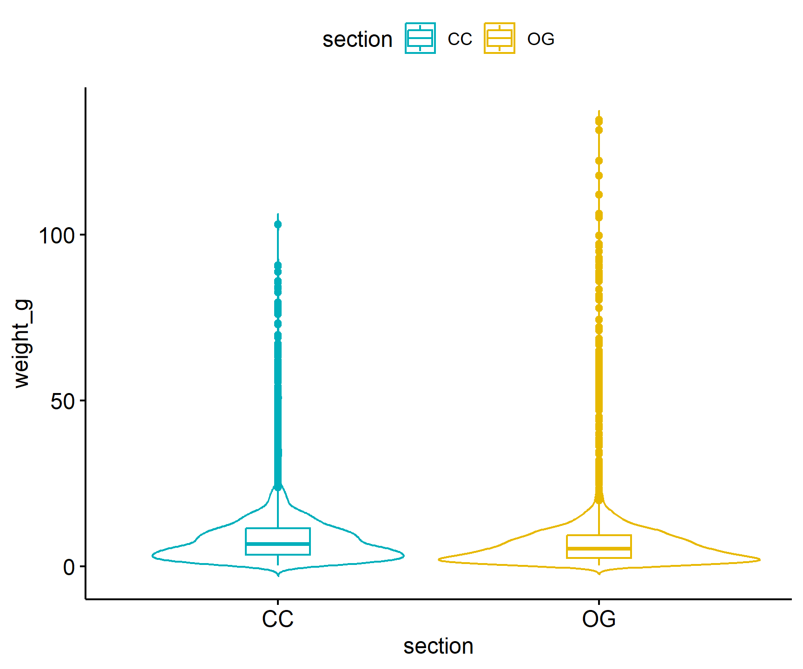
The data represented in the histogram plot above, shows that there isn’t a realy difference between the Clear cut trees and old growth forests, indicating we need to clean the data further or add another indicator.
cc_weight <- GS_clean |>
filter(section == "CC") |>
pull(weight_g)
og_weight <- GS_clean |>
filter(section == "OG") |>
pull(weight_g)
var.test(cc_weight, og_weight)
F test to compare two variances
data: cc_weight and og_weight
F = 0.82901, num df = 3027, denom df = 3309, p-value = 1.439e-07
alternative hypothesis: true ratio of variances is not equal to 1
95 percent confidence interval:
0.7732148 0.8889213
sample estimates:
ratio of variances
0.8290065 The results of this test suggests the variances are not equal. How do we know this? If you can’t remember, please refresh your memory of the null hypothesis for the variance test and how to interpret the p-value.
ggpubr::ggarrange(ggpubr::gghistogram(cc_weight, main = "Clear Cut"),
ggpubr::gghistogram(og_weight, main = "Old Growth"))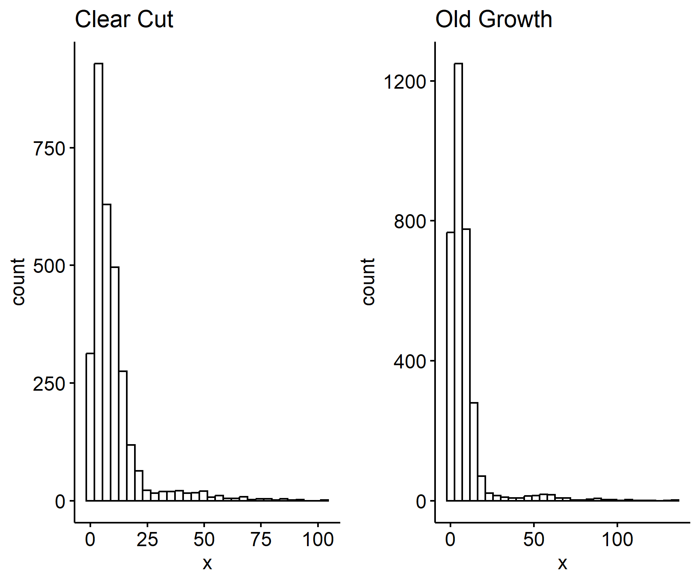
The data of CG salamander abundance is right-skewed in both the Clear cut and Old growth coniferous forests based on the sample data.
var.test(log(cc_weight), log(og_weight))
F test to compare two variances
data: log(cc_weight) and log(og_weight)
F = 0.90548, num df = 3027, denom df = 3309, p-value = 0.005299
alternative hypothesis: true ratio of variances is not equal to 1
95 percent confidence interval:
0.8445382 0.9709179
sample estimates:
ratio of variances
0.9054763 The weight of the CG salamander is statistically significant to test, rejecting the null hypothesis saying that this data is normally distributed. (p-value = 0.005299).
t.test(log(trout_clean$weight_g) ~ trout_clean$section, var.equal = TRUE)
Two Sample t-test
data: log(trout_clean$weight_g) by trout_clean$section
t = 2.854, df = 11535, p-value = 0.004324
alternative hypothesis: true difference in means between group CC and group OG is not equal to 0
95 percent confidence interval:
0.02222425 0.11969560
sample estimates:
mean in group CC mean in group OG
1.457042 1.386082 t.test(trout_clean$weight_g ~ trout_clean$section, var.equal = FALSE)
Welch Two Sample t-test
data: trout_clean$weight_g by trout_clean$section
t = 4.5265, df = 11491, p-value = 6.056e-06
alternative hypothesis: true difference in means between group CC and group OG is not equal to 0
95 percent confidence interval:
0.4642016 1.1733126
sample estimates:
mean in group CC mean in group OG
8.988807 8.170050 The Two sample t-test shows that there is
3. Test the correlation between body length (snout to fork length) and body mass for Cutthroat trout. (Hint: run ?and_vertebrates to find which length variable represents snout to fork length) (10 pts.)
?and_vertebrates # snout-fork length for trout -> length_1_mmcut_clean <- and_vertebrates |>
filter(species == "Cutthroat trout") |>
drop_na(length_1_mm, weight_g)ggarrange(gghistogram(cut_clean$length_1_mm, title = "Length"),
gghistogram(cut_clean$weight_g, title = "Weight"))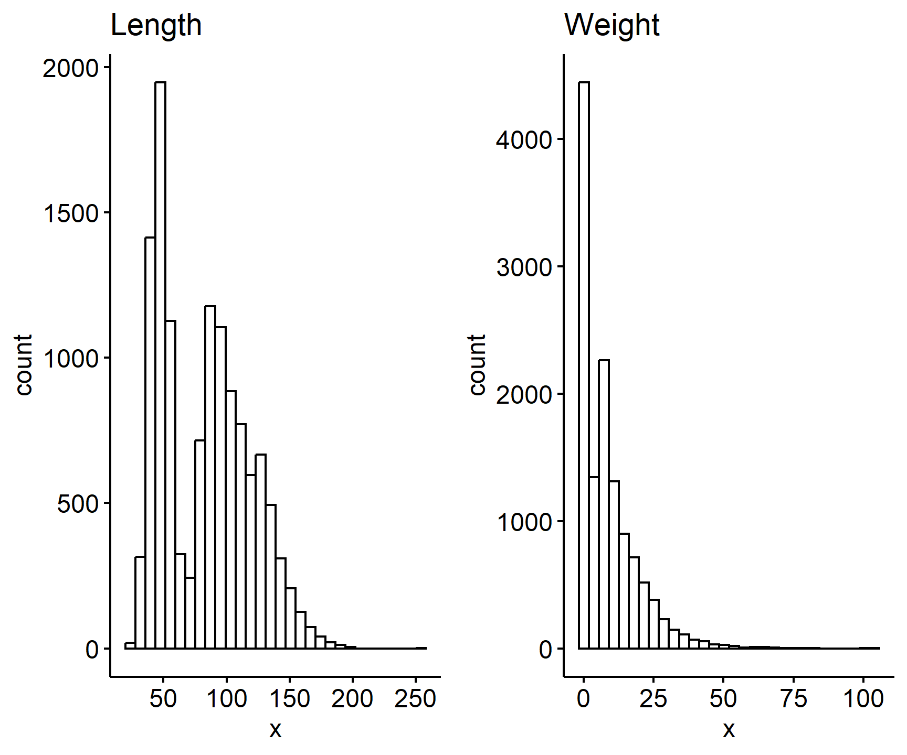
c <- cut_clean |>
slice_sample(n = 5000)
shapiro.test(c$length_1_mm)
Shapiro-Wilk normality test
data: c$length_1_mm
W = 0.94328, p-value < 2.2e-16shapiro.test(c$weight_g)
Shapiro-Wilk normality test
data: c$weight_g
W = 0.81002, p-value < 2.2e-16ggarrange(
gghistogram(log(cut_clean$length_1_mm), title = "Length"),
gghistogram(log(cut_clean$weight_g), title = "Weight")
)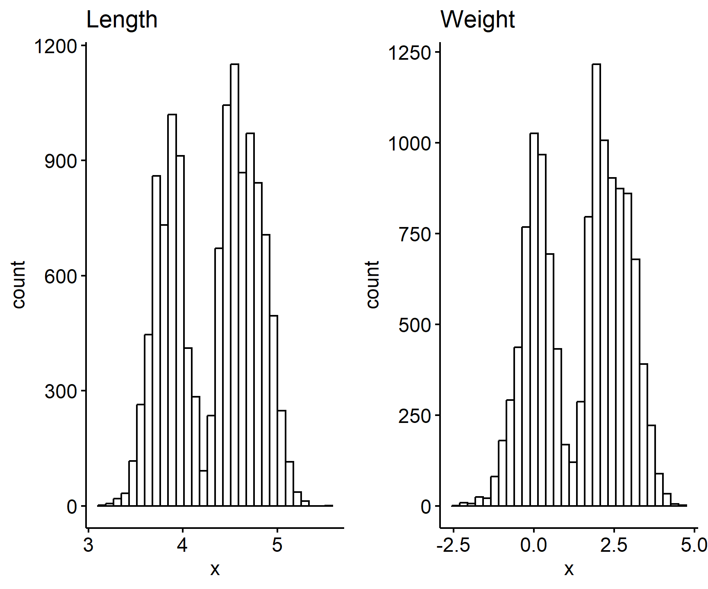
cor.test(log(cut_clean$length_1_mm), log(cut_clean$weight_g))
Pearson's product-moment correlation
data: log(cut_clean$length_1_mm) and log(cut_clean$weight_g)
t = 915.66, df = 12590, p-value < 2.2e-16
alternative hypothesis: true correlation is not equal to 0
95 percent confidence interval:
0.9923125 0.9928295
sample estimates:
cor
0.9925755 cut_clean |>
mutate(log_length = log(length_1_mm), log_weight = log(weight_g)) |>
ggscatter(x = 'log_length',
y = 'log_weight',
alpha = .35,
add = "loess")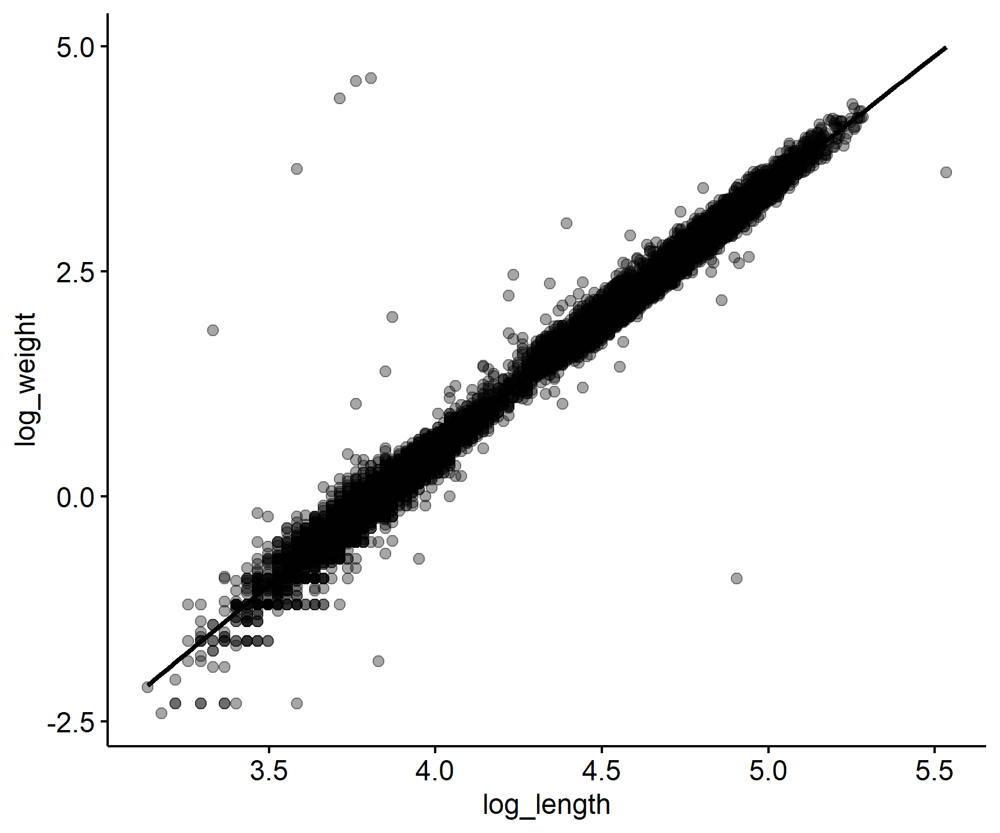
cor.test(cut_clean$length_1_mm, cut_clean$weight_g, method = "spearman")
Spearman's rank correlation rho
data: cut_clean$length_1_mm and cut_clean$weight_g
S = 2669679446, p-value < 2.2e-16
alternative hypothesis: true rho is not equal to 0
sample estimates:
rho
0.9919772 These results also represent a significant, positive relationship between length and weight for the Cutthroat trout, with a very high correlation (rho).
In this part you will be introduced to statistical tests for dealing with more complex data sets, such as when you need to compare across more than two groups (ANOVA) or assess relationships in the form of an equation to predict response variables given single or multiple predictors (Regression).
We need to install one new package for today to use a specific statistical test. This package is called car. Follow the steps below to install the package, and then read in your libraries and data set for the lesson.
#install the car package
install.packages("car")
??car# data set
data("pie_crab")This data set consists of Fiddler crab body size measured in salt marshes from Florida to Massachusetts during summer 2016 at Plum Island Ecosystem LTER.
glimpse(pie_crab)Rows: 392
Columns: 9
$ date <date> 2016-07-24, 2016-07-24, 2016-07-24, 2016-07-24, 2016-07…
$ latitude <dbl> 30, 30, 30, 30, 30, 30, 30, 30, 30, 30, 30, 30, 30, 30, …
$ site <chr> "GTM", "GTM", "GTM", "GTM", "GTM", "GTM", "GTM", "GTM", …
$ size <dbl> 12.43, 14.18, 14.52, 12.94, 12.45, 12.99, 10.32, 11.19, …
$ air_temp <dbl> 21.792, 21.792, 21.792, 21.792, 21.792, 21.792, 21.792, …
$ air_temp_sd <dbl> 6.391, 6.391, 6.391, 6.391, 6.391, 6.391, 6.391, 6.391, …
$ water_temp <dbl> 24.502, 24.502, 24.502, 24.502, 24.502, 24.502, 24.502, …
$ water_temp_sd <dbl> 6.121, 6.121, 6.121, 6.121, 6.121, 6.121, 6.121, 6.121, …
$ name <chr> "Guana Tolomoto Matanzas NERR", "Guana Tolomoto Matanzas…vis_dat(pie_crab)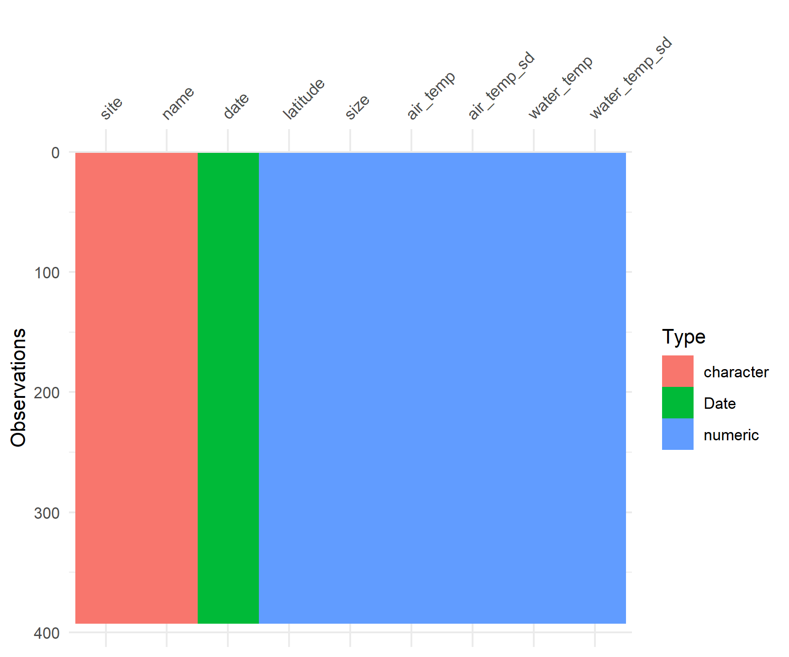
Learn more about each variable:
??pie_crabThis data set provides a great opportunity to explore Bergmann’s rule: where organisms at higher latitudes are larger than those at lower latitudes. There are various hypotheses on what drives this phenomenon, which you can read more about in Johnson et al. 2019.
We have a continuous size variable (carapace width in mm), our dependent variable, and various predictor variables: site (categorical), latitude (continuous), air temperature (continuous) and water temperature (continuous).
Let’s explore the sample size at each site and how many sites are in this data set
# sample size per site
count(pie_crab, site)# A tibble: 13 × 2
site n
<chr> <int>
1 BC 37
2 CC 27
3 CT 33
4 DB 30
5 GTM 28
6 JC 30
7 NB 29
8 NIB 30
9 PIE 28
10 RC 25
11 SI 30
12 VCR 30
13 ZI 35We have 13 sites with ~30 individual male crabs measured at each site.
Let’s also check the range of our continuous variables:
pie_crab |>
ggboxplot(x = 'site', y = 'size', col = 'site') +
geom_jitter(size =.25) +
theme(legend.postition = "none")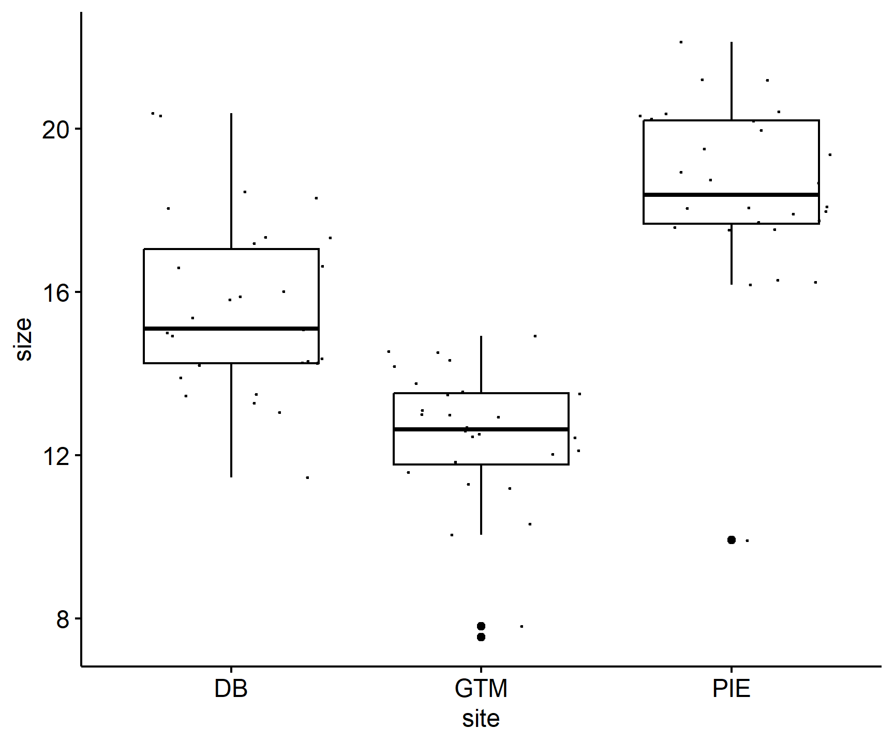
norms <- pie_crab |>
nest(data = -site) |>
mutate(Shapiro = map(data, ~ shapiro.test(.x$size)),
n = map_dbl(data, nrow),
glance_shapiro = map(Shapiro, broom::glance)) |>
unnest(glance_shapiro)
flextable::flextable(dplyr::select(norms, site, n, statistic, p.value)) |>
flextable::set_caption("Shapiro-Wilk normality test for size at each site")site | n | statistic | p.value |
|---|---|---|---|
GTM | 28 | 0.9007814 | 0.0119337484 |
SI | 30 | 0.9705352 | 0.5539208550 |
NIB | 30 | 0.9728297 | 0.6191340731 |
ZI | 35 | 0.9744583 | 0.5765589900 |
RC | 25 | 0.9315062 | 0.0941588802 |
VCR | 30 | 0.9444682 | 0.1200262239 |
DB | 30 | 0.9576271 | 0.2690631942 |
JC | 30 | 0.9634754 | 0.3788327942 |
CT | 33 | 0.9277365 | 0.0301785639 |
NB | 29 | 0.9675367 | 0.4949587443 |
CC | 27 | 0.9354659 | 0.0941803007 |
BC | 37 | 0.8885721 | 0.0014402753 |
PIE | 28 | 0.8489399 | 0.0008899392 |
res_aov <- aov(size ~ site, data = pie_crab)
gghistogram(res_aov$residuals)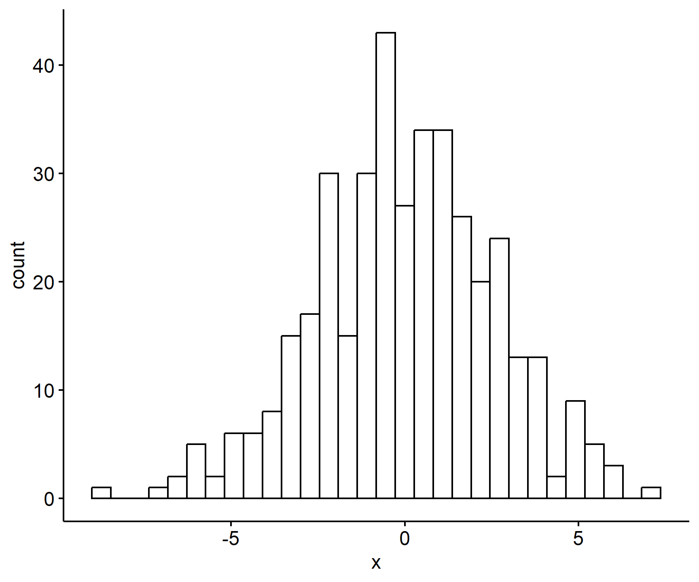
shapiro.test(res_aov$residuals)
Shapiro-Wilk normality test
data: res_aov$residuals
W = 0.99708, p-value = 0.7122leveneTest(size ~ site, data = pie_crab)Levene's Test for Homogeneity of Variance (center = median)
Df F value Pr(>F)
group 12 9.2268 1.151e-15 ***
379
---
Signif. codes: 0 '***' 0.001 '**' 0.01 '*' 0.05 '.' 0.1 ' ' 1#perform Welch's ANOVA
oneway.test(size ~ site, data = pie_crab, var.equal = FALSE)
One-way analysis of means (not assuming equal variances)
data: size and site
F = 39.108, num df = 12.00, denom df = 145.79, p-value < 2.2e-16# Filter a subset of the sites
pie_sites <- pie_crab |>
filter(site %in% c("GTM", "DB", "PIE"))
# Check for equal variance
leveneTest(size ~ site, data = pie_sites)Levene's Test for Homogeneity of Variance (center = median)
Df F value Pr(>F)
group 2 0.548 0.5802
83 # Note that the variances are equal (p = 0.5802), so we can proceed with the ANOVA
# ANOVA for the data subset
pie_anova <- aov(size ~ site, data = pie_sites)
# View the ANOVA results
summary(pie_anova) Df Sum Sq Mean Sq F value Pr(>F)
site 2 521.5 260.75 60.02 <2e-16 ***
Residuals 83 360.6 4.34
---
Signif. codes: 0 '***' 0.001 '**' 0.01 '*' 0.05 '.' 0.1 ' ' 1TukeyHSD(pie_anova) Tukey multiple comparisons of means
95% family-wise confidence level
Fit: aov(formula = size ~ site, data = pie_sites)
$site
diff lwr upr p adj
GTM-DB -3.200786 -4.507850 -1.893722 3.0e-07
PIE-DB 2.899929 1.592865 4.206992 2.9e-06
PIE-GTM 6.100714 4.771306 7.430123 0.0e+00ggboxplot(pie_anova, x = "site", y = "size", palette = "jco") +
geom_jitter(size =.25) +
theme(legend.postition = "none")To understand the difference in crab sizes as they relate to their latitudinal location, we based our research following the Fiddler crab body size data set. With 13 sites that range in latitude from 30 degrees to 42 degrees and 13 different classes of sites, we aimed to understand the distribution within each group using an initial ANOVA test and Shapiro-Wilk normality test. With all the cases, their p-values were below 0.01, with an expection for BC and PIE, this means that the data fits within a normal distribution across grouping. During the Shapiro-WIlk normaily test, we founda residual with p-value of 0.71, accepting the null hypothesis that this data fits a normal distribution. Next using the Leven’s test to understand the equalily of variance across all groups, we confirmed that the data set we focused on was NOT equal. We then tested the response to a Welch ANOVA, specifying the variance was false, this proved a highly statistically significant corelation with our site’s mean is different from the others.
To understand further, we south out to use a Tukey’s HSD post-hoc test, to understand the pairwise comparisons of the 13 sites and their latitudinal significance to crab size. To simplify the statisical approach we focused on 3 sites; GTM, DB, and PIE, since they represent the wide breadth of latitudinal differences in the data. Using a 95% confidence interval with the Tukey, we found that there was a significant difference between GTM, DB, and PIE, as shown in the box plot represented above.
water_temp_sd (a measure reflecting annual variation in water temperature) on carapace width. Report your findings (include code and a sentence reporting the results) AND create a plot with a line of best fit. Include both the code to create the plot and an image of the figure. (10 pts).pie_lm <- lm(size ~ water_temp_sd, data = pie_crab)
#view the results of the linear model
summary(pie_lm)
Call:
lm(formula = size ~ water_temp_sd, data = pie_crab)
Residuals:
Min 1Q Median 3Q Max
-7.9428 -2.6948 -0.2145 2.6573 8.8070
Coefficients:
Estimate Std. Error t value Pr(>|t|)
(Intercept) 13.93728 1.15338 12.084 <2e-16 ***
water_temp_sd 0.09938 0.15716 0.632 0.528
---
Signif. codes: 0 '***' 0.001 '**' 0.01 '*' 0.05 '.' 0.1 ' ' 1
Residual standard error: 3.506 on 390 degrees of freedom
Multiple R-squared: 0.001024, Adjusted R-squared: -0.001537
F-statistic: 0.3999 on 1 and 390 DF, p-value: 0.5275pie_crab |>
ggscatter(x = 'water_temp_sd', y = 'size',
alpha = .35,
add = "reg.line")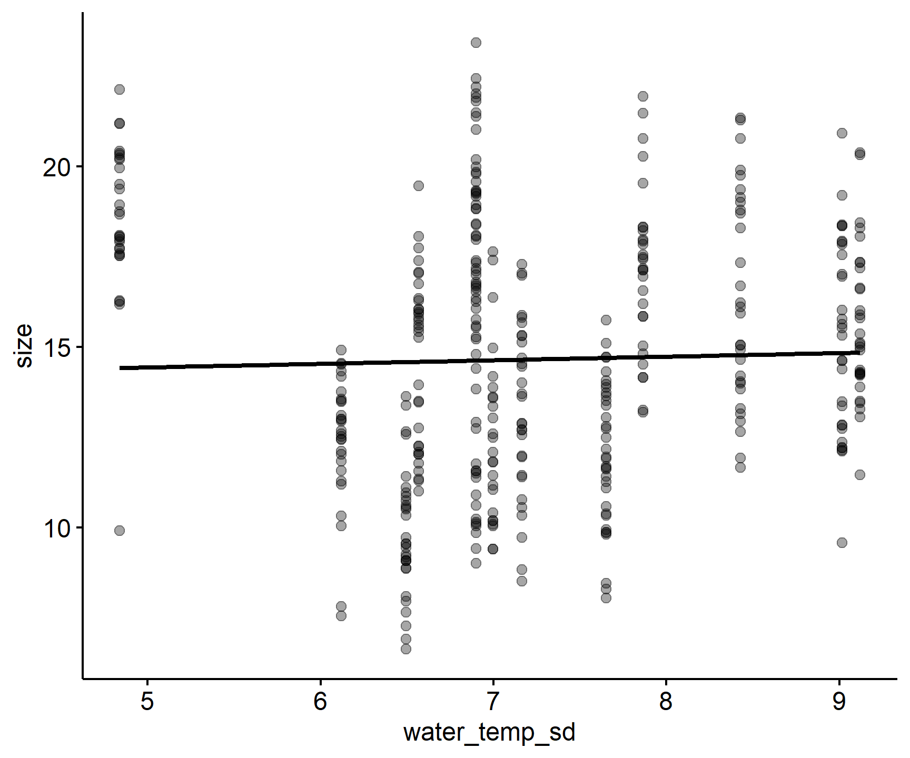
latitude, air_temp_sd, and water_temp_sd on carapace width. First check for correlations among the three predictor variables (and report the correlation table) and second report your findings from the multiple linear regression (code and a sentence reporting the results). (10 pts.)pie_crab |>
dplyr::select(latitude, air_temp_sd, water_temp_sd) |>
cor() latitude air_temp_sd water_temp_sd
latitude 1.00000000 0.7932130 0.04188273
air_temp_sd 0.79321301 1.0000000 0.40970338
water_temp_sd 0.04188273 0.4097034 1.00000000The correlation table understanding the relationship between latitude, air temp sd, water temp sd have correlation between air temp and latitude, but water temp sd is not correlated to thier air temp or latitude since the correlation coefficient is less than 0.7.
pie_mlm <- lm(size ~ latitude + air_temp_sd + water_temp_sd, data = pie_crab)
summary(pie_mlm)
Call:
lm(formula = size ~ latitude + air_temp_sd + water_temp_sd, data = pie_crab)
Residuals:
Min 1Q Median 3Q Max
-7.7515 -1.8897 0.0506 1.9301 6.6746
Coefficients:
Estimate Std. Error t value Pr(>|t|)
(Intercept) -3.96880 1.54818 -2.564 0.0107 *
latitude 0.55940 0.06413 8.723 <2e-16 ***
air_temp_sd -0.41713 0.30559 -1.365 0.1730
water_temp_sd 0.15927 0.16174 0.985 0.3254
---
Signif. codes: 0 '***' 0.001 '**' 0.01 '*' 0.05 '.' 0.1 ' ' 1
Residual standard error: 2.832 on 388 degrees of freedom
Multiple R-squared: 0.3516, Adjusted R-squared: 0.3466
F-statistic: 70.13 on 3 and 388 DF, p-value: < 2.2e-16The multiple linear regression model for the comparison of carapase size on latitude, air temp sd, water temp sd, shows a statistically significant trent indicating there is an impact on the combination of those predictors on the size of a crabs carapace.
Thanks to the developers of lterdatasampler for providing the data set and vignettes that helped guide the creation of this lesson plan.
Johnson, D. 2019. Fiddler crab body size in salt marshes from Florida to Massachusetts, USA at PIE and VCR LTER and NOAA NERR sites during summer 2016. ver 1. Environmental Data Initiative. https://doi.org/10.6073/pasta/4c27d2e778d3325d3830a5142e3839bb (Accessed 2021-05-27).
Johnson DS, Crowley C, Longmire K, Nelson J, Williams B, Wittyngham S. The fiddler crab, Minuca pugnax, follows Bergmann’s rule. Ecol Evol. 2019;00:1–9. https://doi.org/10.1002/ece3.5883
Data Source: Gregory, S.V. and I. Arismendi. 2020. Aquatic Vertebrate Population Study in Mack Creek, Andrews Experimental Forest, 1987 to present ver 14. Environmental Data Initiative. https://doi.org/10.6073/pasta/7c78d662e847cdbe33584add8f809165
Kaylor, M.J. and D.R. Warren. 2017. Linking riparian shade and the legacies of forest management to fish and vertebrate biomass in forested streams. Ecosphere 8(6). https://doi.org/10.1002/ecs2.1845